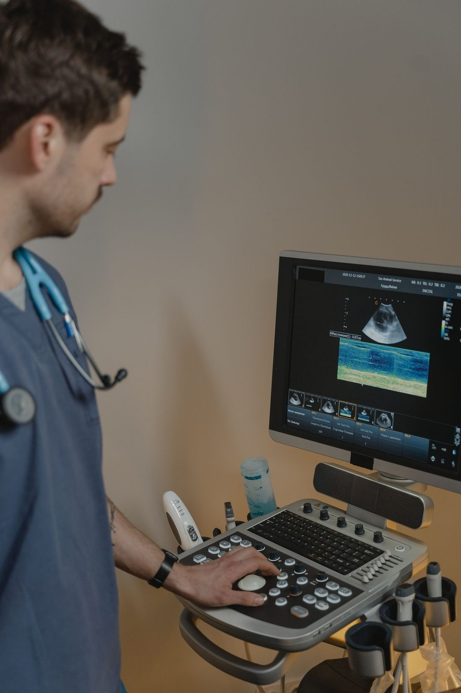

The short version
- A pelvic ultrasound looks at the uterus, ovaries and bladder in women, and at the bladder and prostate in men.
- It is the first test for pelvic pain, heavy or irregular periods, suspected fibroids or ovarian cysts, and checking the position of an IUD.
- The scan through the lower abdomen needs a full bladder. We confirm your exact drinking instructions when you book.
- When it is clinically appropriate and with your consent, an internal (transvaginal) scan may be offered for a more detailed view. You can decline it.
- The exam is painless, uses no radiation and usually takes 30 to 45 minutes.
- With a valid health card and a requisition, the exam is covered by OHIP.
Pelvic pain that will not settle. Periods that have become heavier or less predictable. A feeling of pressure or bloating low in the abdomen. These are some of the most common reasons a family doctor orders a pelvic ultrasound, and for most patients it is the only imaging they need.
This guide explains what the exam looks at, why your provider may have ordered it, how to prepare, and what the appointment is like at our clinic in downtown Oshawa.
What a pelvic ultrasound looks at
Using sound waves and no radiation, the exam creates live pictures of the organs in the lower abdomen:
- In women: the uterus and its lining (the endometrium), the cervix, the ovaries and the bladder.
- In men: the bladder and the prostate, including how well the bladder empties.
If your provider has asked for the kidneys and bladder to be examined, or for a pregnancy scan, those are separate exams with their own preparation. Our guide to pregnancy ultrasound covers scans during pregnancy.
Why it is ordered
Scroll sideways to see the full table.
| Reason for the exam | What ultrasound can show |
|---|---|
| Pelvic pain or pressure | Ovarian cysts, fibroids, fluid in the pelvis and other causes |
| Heavy, irregular or painful periods | Fibroids, polyps, the thickness of the uterine lining, and signs that suggest adenomyosis |
| Bleeding after menopause | The thickness and appearance of the uterine lining |
| A lump or fullness found during an exam | Whether it is solid or fluid filled, its size and where it comes from |
| Irregular cycles or possible PCOS | The size of the ovaries and the number of follicles |
| An IUD check | Whether the device is sitting in the correct position |
| Follow-up of a known cyst or fibroid | Whether it has grown, shrunk or gone |
| Urinary symptoms in men | Prostate size and how much urine remains after emptying the bladder |
Two findings deserve a word of reassurance. Fibroids are non-cancerous growths of the muscle of the uterus and are very common, especially from the thirties onward. Many cause no symptoms. Ovarian cysts are also common in women who are still having periods, and most are simple fluid filled cysts that go away on their own within a few months. This is why a repeat ultrasound after an interval is often all that is recommended.
Two ways of scanning
Transabdominal. The probe is moved over the lower abdomen with warm gel. This gives a wide view of the whole pelvis and is part of every pelvic exam. It needs a full bladder, because the bladder pushes the bowel aside and acts as a window for the sound waves.
Transvaginal. When it is clinically appropriate, an internal scan may be offered after you have emptied your bladder. A slim, covered probe is placed a short way into the vagina. Because it sits closer to the uterus and ovaries, the pictures are more detailed. It is always your choice. The sonographer will explain it first and ask for your consent, and you can decline or stop at any point. It is not performed on patients who have never been sexually active. If you have a preference about who performs your exam, please mention it when you book.
How to prepare
A full bladder is the single biggest factor in getting clear pictures from the outside. A typical instruction is to finish drinking about a litre of water one hour before your appointment and not to empty your bladder until the sonographer tells you. Your exact instructions are confirmed when you book, so please follow those if they differ.
- Water is best. Avoid carbonated drinks, which add gas.
- You may eat normally, unless you are also having an abdominal ultrasound, which needs fasting.
- Take your usual medicines.
- Wear a two piece outfit so only your lower abdomen needs to be uncovered.
- You can have the exam during your period. If your provider has asked for the scan at a certain point in your cycle, tell us when you book.
- Bring your Ontario health card and your requisition.
If your bladder becomes painfully full before you are called, tell reception. Letting out a small amount is better than being too uncomfortable to lie still. Full instructions for every exam are on our patient preparation page.
What happens during the scan
- Check in
We confirm your details, the exam ordered and that your bladder is full.
- The abdominal scan
You lie on your back. Gel is applied to your lower abdomen and the sonographer moves the probe to take pictures and measurements. You will feel pressure on a full bladder, but it should not hurt.
- Empty your bladder
You are shown to the washroom. For some exams, a second quick scan checks how well the bladder has emptied.
- The internal scan, if offered and agreed
This part usually takes five to ten minutes. You are covered with a drape throughout.
- Finished
You can return to normal activities straight away. Most pelvic exams take 30 to 45 minutes in total.
Your results
The sonographer cannot give you results at the appointment. A qualified physician interprets the images and sends a written report to the provider who ordered the exam, who will explain the findings and any next steps. If you have not heard after about a week, contact your provider's office.
Common next steps after a pelvic ultrasound
What happens next depends on what the scan shows and on your symptoms. For many patients the result is normal, which is useful in itself because it rules out the most common structural causes. Other frequent outcomes are a repeat ultrasound in six to twelve weeks to confirm that a simple cyst has gone, treatment from your family doctor for heavy periods or pain, blood tests, or a referral to a gynecologist or urologist. Your provider will decide with you. Our role is to give them clear, complete images and a prompt report.
Booking a pelvic ultrasound in Oshawa
You need a requisition from a physician, nurse practitioner, midwife or other authorized provider. With a valid Ontario health card, the exam is covered by OHIP. To book, call +1 (289) 481-0263 or request an appointment online. We are at 115 Simcoe St S in downtown Oshawa, open Monday to Friday from 9:00 AM to 6:00 PM and Saturday from 10:00 AM to 4:00 PM.
If you need a requisition and do not have a family doctor, Simcoe Medical Clinic in the same building offers family and walk-in care with male and female doctors.
Common questions
Do I need a full bladder for a pelvic ultrasound?
Yes, for the scan through the lower abdomen. A typical instruction is to finish about a litre of water one hour before your appointment and not to empty your bladder. We confirm your exact instructions when you book.
Is the internal (transvaginal) scan required?
No. It may be offered when it is clinically appropriate because it gives more detailed pictures, but it is always your choice. The sonographer explains it and asks for your consent, and you can decline.
Can I have a pelvic ultrasound during my period?
Yes. The exam can be done at any time in your cycle unless your provider has asked for specific timing. If you are unsure, call us before your appointment.
Does a pelvic ultrasound hurt?
It should not. The scan through the abdomen involves pressure on a full bladder, which can be uncomfortable but not painful. An internal scan may cause a feeling of pressure. Tell the sonographer if you have any discomfort.
How long does it take?
Most pelvic ultrasound exams take 30 to 45 minutes, including the time to empty your bladder part way through.
Do men have pelvic ultrasounds?
Yes. In men, a pelvic ultrasound looks at the bladder and prostate, and can measure how much urine remains after emptying the bladder. A full bladder is needed.
This article is general information only and does not replace medical advice. Please speak with your physician or healthcare provider about your own health concerns. Imaging results are interpreted by qualified professionals and sent to your referring physician.